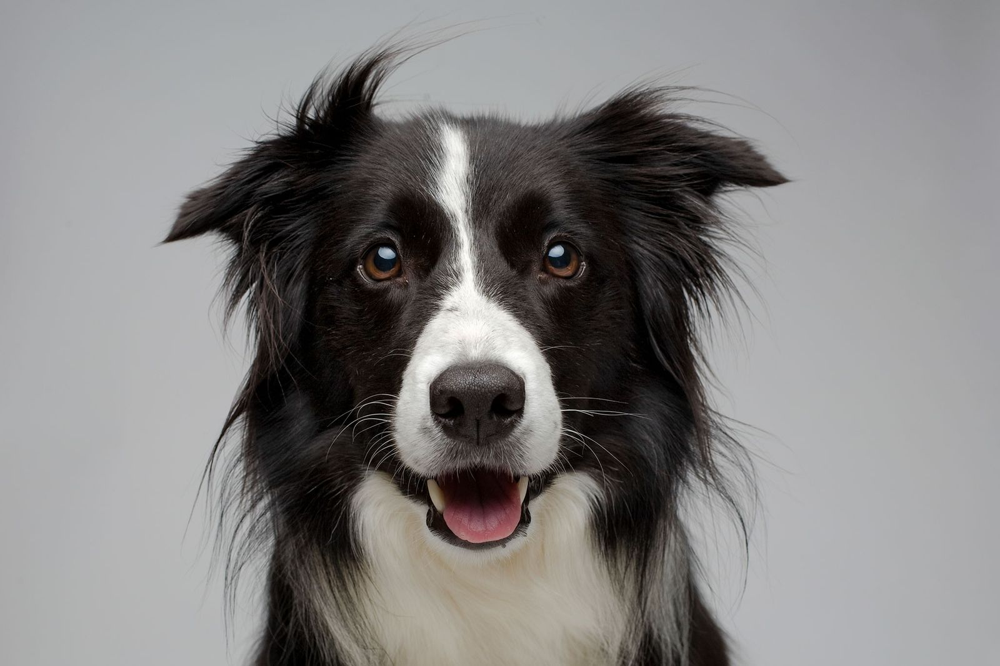
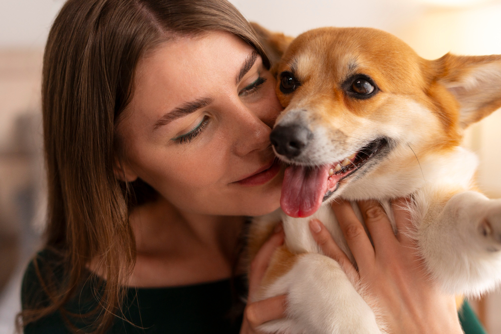

Sobre o Instituto AuMigo 🐾
A AuMigo é um cantinho cheio de amor e carinho para todos os bichinhos que precisam de uma segunda chance! 💕 Nosso foco principal são os cachorrinhos, mas estamos sempre de portas abertas para outros animaizinhos que precisem de ajuda. Aqui, todos os peludinhos são tratados como parte da nossa família!
Nosso trabalho é garantir que cada patinha resgatada tenha abrigo, comida quentinha, cuidados veterinários e, claro, muito carinho. A missão da AuMigo vai além de resgatar, queremos que todos os nossos amiguinhos encontrem uma família responsável e cheia de amor para chamar de sua.
Porque acreditamos que todo bichinho merece ser amado, respeitado e ter um lar cheio de alegria. 🐾✨



💡 Nossos valores
- Amor e respeito aos animais
- Adoção responsável
- Compromisso com o bem-estar animal
- Transparência com a comunidade
📊 Nosso impacto
+50 animais resgatados
+30 adoções realizadas
+100 atendimentos veterinários
📍 Onde estamos localizados
width="100%" height="300" style="border:0; border-radius:10px;">📞 Contato
(17) 99152-9098